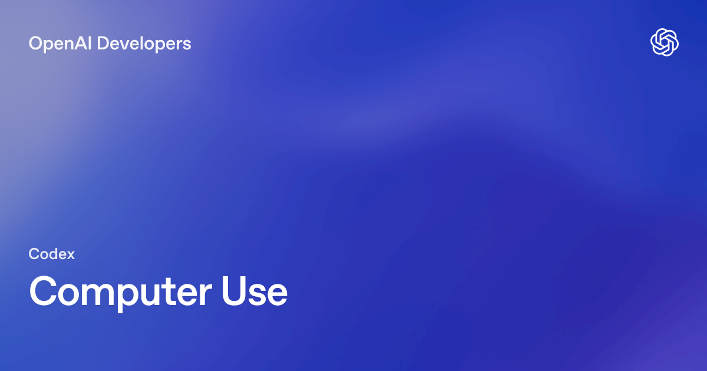
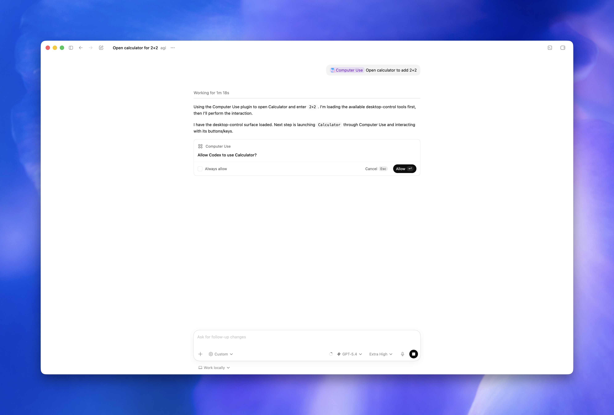

핵심 요약
OpenAI가 Codex 앱에 Computer Use 기능을 출시했다. Codex가 macOS 데스크톱 앱의 화면을 보고, 클릭하고, 타이핑할 수 있게 되었다. 명령줄이나 구조화된 API로 접근할 수 없는 GUI 작업을 AI 에이전트가 직접 수행하는 기능이다.
- 대상: macOS 전용 (EEA, 영국, 스위스는 런치 미지원)
- 필요 권한: 화면 녹화(Screen Recording) + 접근성(Accessibility)
- 설정: Codex 설정에서 Computer Use 플러그인 설치 → macOS 권한 부여
설정 방법
1. 플러그인 설치
Codex 설정(Settings) → Computer Use 섹션 → Install 클릭
2. macOS 권한 부여
설치 시 macOS가 두 가지 권한을 요청한다:
| 권한 | 용도 |
|---|---|
| Screen Recording | Codex가 타겟 앱의 화면을 볼 수 있음 |
| Accessibility | Codex가 클릭, 타이핑, 네비게이션을 수행할 수 있음 |
⚠️ 권한을 거부한 경우: 시스템 설정 > 개인정보 보호 및 보안 > 화면 녹화 / 접근성에서 Codex 앱을 수동으로 추가
3. 앱 승인
Codex가 컴퓨터 조작 시 사용할 앱마다 권한을 요청한다:
- 매번 물어보기 (기본): 작업 시마다 승인 필요
- 항상 허용: 해당 앱에 대해 자동 승인 (설정에서 관리)
- 설정 > Computer Use에서 “Always allow” 목록을 관리할 수 있다

Codex가 데스크톱 앱을 조작하기 전 사용자에게 권한을 요청하는 다이얼로그언제 사용하면 좋을까
Computer Use는 명령줄이나 구조화된 통합으로 해결할 수 없는 GUI 작업에 적합하다.
✅ 추천 사용 사례
| 상황 | 예시 |
|---|---|
| 데스크톱 앱 테스트 | ”내가 만든 macOS 앱의 온보딩 버그를 재현해봐” |
| 웹 브라우저 작업 | ”@Chrome을 열고 체크아웃 페이지가 정상인지 확인해줘” |
| GUI 버그 재현 | ”이 버그는 그래픽 인터페이스에서만 발생해” |
| 앱 설정 변경 | 클릭으로만 접근 가능한 설정 UI |
| 플러그인 없는 데이터 소스 | API/MCP 서버가 없는 앱의 데이터 확인 |
| 다중 앱 워크플로우 | 앱 A에서 데이터 복사 → 앱 B에 붙여넣기 |
| 백그라운드 작업 | 작업 중인 동안 Codex가 별도 앱에서 작업 수행 |
❌ 적합하지 않은 경우
- 웹 개발 중인 로컬 앱: Codex 내장 브라우저를 먼저 사용
- 구조화된 통합이 가능한 앱: 전용 플러그인이나 MCP 서버를 우선 사용
- 터미널 앱이나 Codex 자체: 보안 정책 우회 방지
사용 방법
프롬프트에서 @Computer Use 또는 @AppName을 언급하거나, computer use 사용을 명시한다.
프롬프트 예시:
Open the app with computer use, reproduce the onboarding bug,
and fix the smallest code path that causes it.
After each change, run the same UI flow again.
Open @Chrome and verify the checkout page still works
after the latest changes.
핵심 팁:
- 정확한 앱 이름, 창, 또는 흐름을 명시할수록 정확하다
- 한 번에 하나의 명확한 타겟 앱/흐름을 지정하라
- MCP 서버나 플러그인이 있는 앱이라면 그것을 먼저 사용하라
보안 가이드라인
Computer Use는 프로젝트 워크스페이스 밖의 앱/시스템 상태에 영향을 줄 수 있으므로 주의가 필요하다.
해야 할 것
- ✅ 작업을 좁게 설정: 한 번에 하나의 명확한 타겟 앱 지정
- ✅ 권한 프롬프트 검토: 앱 승인 전 반드시 내용 확인
- ✅ Always allow는 신뢰하는 앱에만: 민감한 앱은 매번 승인
- ✅ 직접 모니터링: 민감한 흐름 실행 시 반드시 옆에 있기
- ✅ 잘못된 창 조작 시 즉시 취소
하지 말아야 할 것
- ❌ 민감한 앱 열어두기: 작업에 불필요한 금융/보안 앱은 닫기
- ❌ 비밀번호/보안 설정 자동화: 반드시 사용자가 직접 승인
- ❌ Codex 작업 중 동시 브라우저 사용: 동일 브라우저의 로그인 세션이 공유됨
- ❌ 무제한 권한 부여: 항상 허용은 최소한의 앱에만
제한 사항
- 터미널 앱 및 Codex 자체는 자동화 불가 (보안 정책 우회 방지)
- 관리자 인증 불가: 시스템 보안/개인정보 권한 프롬프트는 자동 승인 안 됨
- 파일 편집/셸 명령은 기존 Codex 샌드박스 규칙 적용
- 데스크톱 앱의 변경사항은 디스크에 저장되고 프로젝트에서 추적되어야 리뷰 패널에 반영
Claude Computer Use와의 비교
| 항목 | OpenAI Codex Computer Use | Anthropic Claude Computer Use |
|---|---|---|
| 플랫폼 | macOS 전용 (Codex 앱) | API 기반 (다양한 클라이언트) |
| 지역 제한 | EEA, 영국, 스위즈 제외 | 제한 없음 |
| 설정 방식 | 앱 내 플러그인 설치 | API 호출 + 컴퓨터 사용 툴 |
| 권한 | macOS Screen Recording + Accessibility | API 키 + 클라이언트 설정 |
| 앱 승인 | Codex 내 “Always allow” 목록 | 클라이언트별 설정 |
| 보안 모델 | 샌드박스 + 앱별 승인 | 커스텀 보안 정책 |
| 접근성 | 개발자 도구 내장 | API 직접 호출 |
| 가격 | Codex 구독 포함 | API 사용량 기반 (25 MTok) |
핵심 차이
OpenAI의 접근은 개발자 워크플로우에 통합된 형태다. Claude는 API로 직접 제어하는 형태로 더 범용적이지만 설정이 복잡하다. Codex는 설치 → 권한 → 사용의 단순한 흐름으로 개발자 친화적이다.
실무 시사점
초등 AI 교육 관점
Computer Use는 학생들에게 **“AI가 어떻게 컴퓨터를 조작하는지”**를 시각적으로 보여주는 훌륭한 교육 도구가 될 수 있다:
- 코드 작성 → 실행 → 화면 확인 → 수정의 전체 루프를 시각적으로 체험
- “AI가 내 컴퓨터를 조작할 수 있다면, 어떻게 안전하게 사용해야 할까?” 디지털 리터러시 교육
- GUI 버그 재현, 앱 테스트 자동화 등 실무적 활용 체험
업무 자동화 관점
- UI 기반 레거시 앱 자동화: API가 없는 오래된 업무 소프트웨어 조작
- 크로스 앱 워크플로우: 여러 앱 간 데이터 이동/변환 자동화
- QA 자동화: 데스크톱 앱의 UI 테스트 자동화
한계와 주의점
- 아직 macOS 전용으로 Windows/Linux 지원 필요
- 지역 제한 (유럽 등)이 존재
- 민감한 작업에서는 반드시 사람이 모니터링해야 함
- 브라우저 사용 시 로그인 세션 공유에 주의
FAQ
Computer Use는 Windows에서도 사용할 수 있나요?
현재 macOS 전용입니다. Windows/Linux 지원은 추후 예정입니다.
이미 MCP 서버나 플러그인이 있는 앱도 Computer Use를 사용해야 하나요?
아닙니다. 구조화된 통합(플러그인/MCP)이 가능하면 그것을 먼저 사용하세요. Computer Use는 시각적 검증이나 구조화된 접근이 불가능한 경우에 사용합니다.
Codex가 내 브라우저에서 로그인한 세션에 접근할 수 있나요?
네, Codex가 브라우저를 사용하면 기존 로그인 상태가 유지됩니다. 웹사이트의 승인된 클릭과 폼 제출은 사용자 본인의 행동으로 처리됩니다. 보안을 위해 다른 브라우저를 사용하는 것을 권장합니다.
비용은 어떻게 되나요?
Computer Use는 Codex 앱 구독에 포함되어 있습니다. 별도의 API 비용은 발생하지 않습니다.